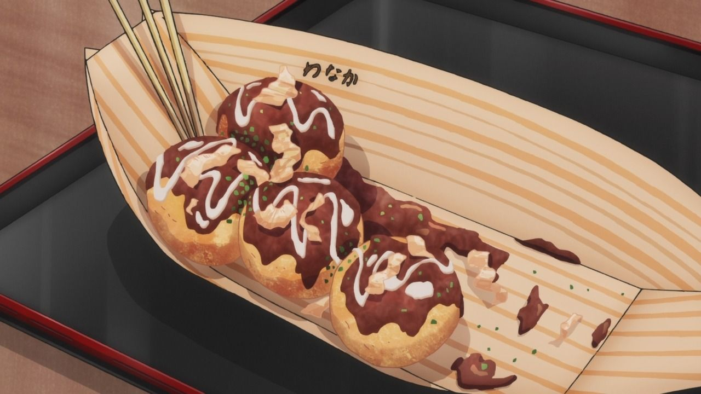

Takoyaki

Description:
Takoyaki (たこ焼き) is a Japanese snack in the shape of little round balls containing pieces of octopus.
Tako-yaki literally translates to “octopus-grilled/fried” and some people may call it “Octopus Balls” or “Octopus Dumplings”.
Ingredients:
- 3 large eggs lightly beaten
- 4.25 cups cold water
- 2 tsp instant dashi
- 2 tsp soy sauce
- 1/2 tsp salt
- 2.5 cups all purpose flour about 300g
- 1/2 lb boiled octopus 0.5" cubed
- 1 bunch green onions sliced
- 1 cup tempura bits or rice krispies
- beni shoga/pickled ginger if desired
- shredded or cubed cheese if desired
- mayo preferably Japanese/Kewpie Brand
- takoyaki sauce
- bonito flakes
- aonori or seaweed strips
Special Equipment: Takoyaki Pan
Steps:
- Beat the eggs and add the water and stock granules. Add the egg-water-dashi mixture to the flour and salt and mix well.
Heat up your pan and oil the individual compartments with a oil brush or use a paper towel dipped in oil.
- When the pan is hot, pour the batter into the individual compartments up to the top. Don’t worry if the batter over flows a bit.
- Add green onions, your protein, tempura bits/rice krispies, ginger, and shredded cheese (if using).
- After a while, the bottom of the takoyaki will be cooked through. At this point, you can use a skewer or two to turn them over 90 degrees.
If you can’t turn the takoyaki easily, it probably needs to cook for a bit longer. If needed, add a bit more batter to the balls to fill them up.
Let cook for a minute or so and then do another 90 degree turn. The balls will become easier to turn the more they cook.
- The takoyaki are done when they’re lightly brown and crispy on the outside and they turn easily in their holes.
Overall I’d say it takes about 10-15 minutes per batch, from start to finish, depending on how crispy or soft you like your takoyaki.
- To serve, place the takoyaki on a plate and drizzle with Japanese mayonnaise and takoyaki sauce.
Genrously sprinkle on the bonito flakes and aonori. Enjoy, but be careful, the insides are hot!